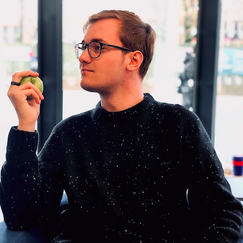

Originally from San Diego, California, I am a second-year PhD student at Stanford University. My research thus far has concerned sociolinguistics and the linguistic constructions of personae in contemporary popular music. I am also interested in the relationship between social ideologies and language production and processing, which is the topic of my first Qualifying Paper.
I graduated from the University of Edinburgh with a Masters of Arts with First Class Honours in Linguistics in 2020. During my time there, I served as the First Year Representative, Social Secretary, and President of the student Lingusitics Society.
I also served as the National Chair of the Undergraduate Linguistics Association of Britain. Over the course of COVID-19, I helped found and served as the Head of the Review Team for the new Journal of the Undergradaute Linguistics Association of Britain. While I have since stepped down from this role, I encourage any and all undergraduates and high schoolers interested in linguistics to take a look at their work!